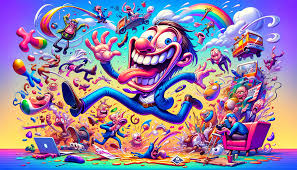
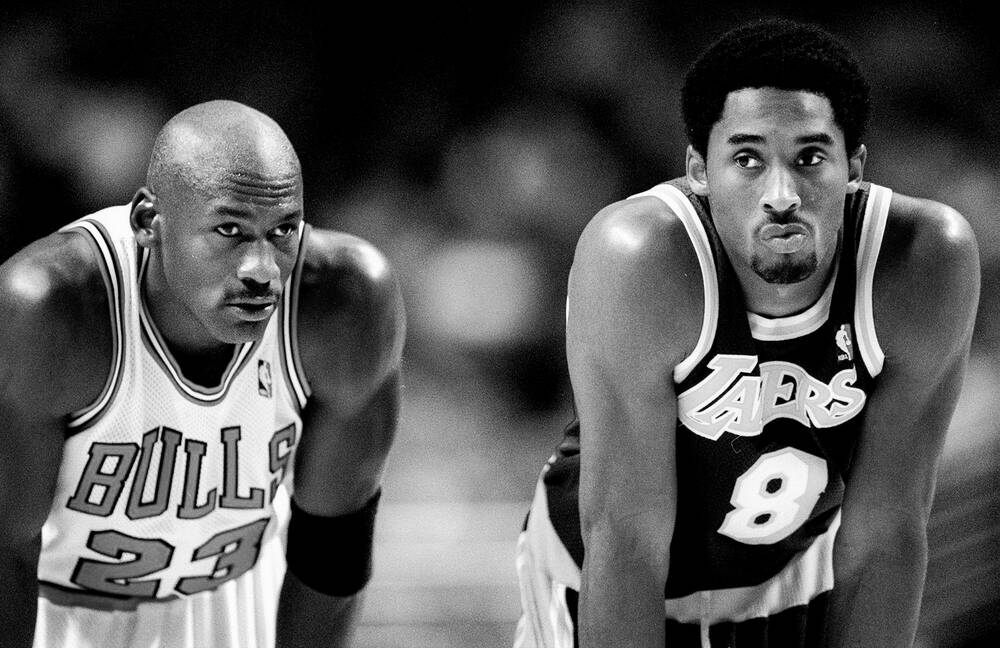

Future Project 1

Got no clue what is happening in this glorious image, got it from google.
Future Project 2
Jonesy and triple t look confused.
Future Project 3

Lebron getting dunked on bahahaa. MJ better no debate.
Future Project 4

Goat and Black Mamba side by side.